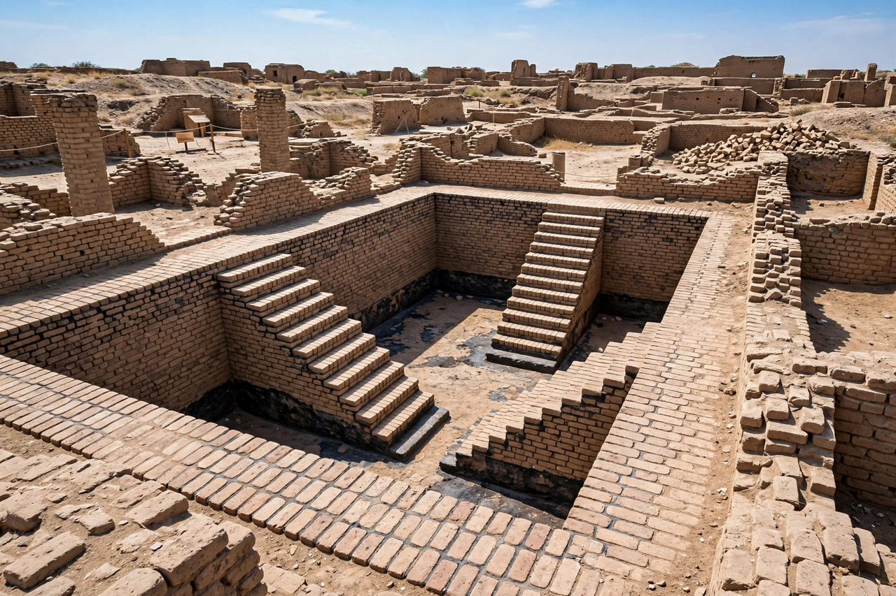

Mohenjo-daro

Excavated brick streets and the stupa mound of Mohenjo-daro
Mohenjo-daro (Sindhi for 'Mound of the Dead Men') was an ancient Indus Valley city in present-day Sindh, Pakistan, built around 2500 BC and among the largest settlements of its civilisation. Planned on a grid of streets, built mostly of fired brick, and provided with wells, bathrooms and covered drains unmatched anywhere in the Bronze Age world, it housed perhaps 40,000 people. Abandoned around 1900 BC, it was rediscovered in 1922 and is now a UNESCO World Heritage Site, threatened by waterlogging and salt damage.
Layout and buildings
The city divides into a raised western citadel mound — carrying the Great Bath, a watertight tank 12 metres long probably used for ritual bathing, a possible granary and assembly halls — and a lower town of courtyard houses of varied size, suggesting a broad middle class rather than extremes of wealth. More than 700 wells served the city, and its drainage system led household waste water into street sewers with manholes, an infrastructure unparalleled until Roman times.
Rediscovery
Excavations by the Archaeological Survey of India under John Marshall revealed the city in the 1920s; finds include the bronze 'Dancing Girl' statuette and the steatite 'Priest-King' bust (both names are modern guesses). No palace, temple or royal grave has been identified, reinforcing the puzzle of how Harappan society was governed. Conservation struggles continue against the rising water table of the irrigated Indus plain.